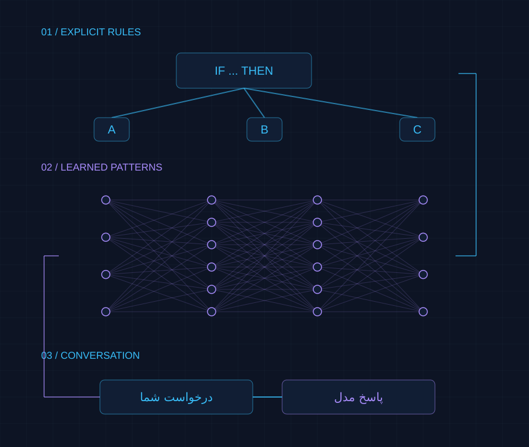
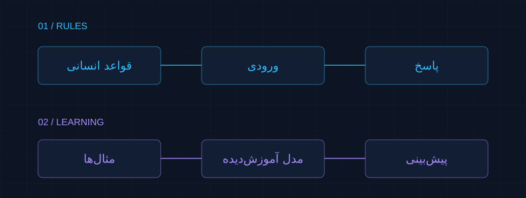
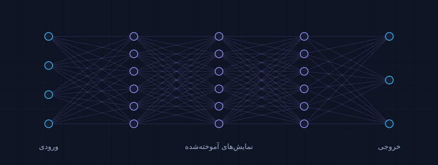
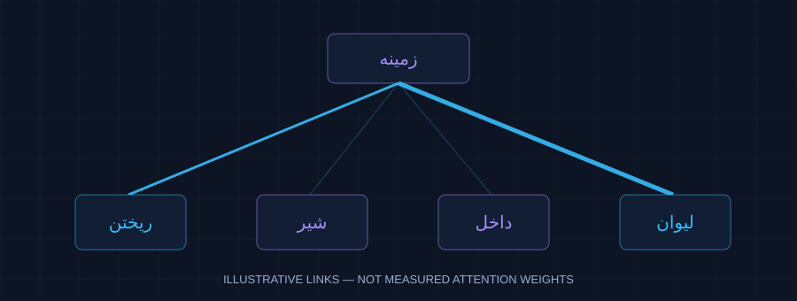
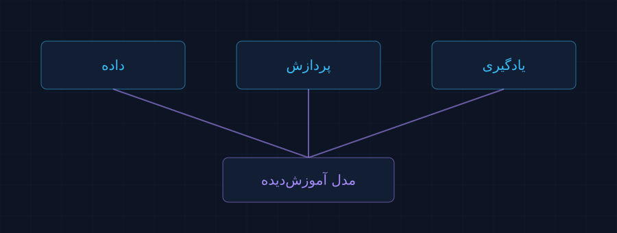
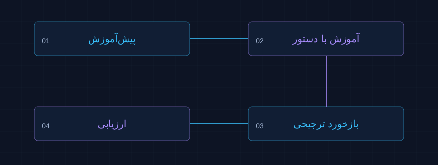
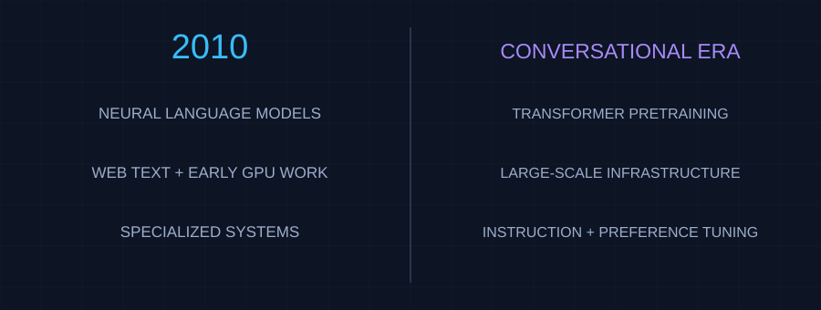

نمره بهتر، معادل چند برابر شدن هوش نیست.
عملکرد به آزمون، زبان و نوع کار وابسته است. قوانین مقیاس، رابطهای توانی میان خطای پیشبینی و منابع آموزش توصیف میکنند؛ نه قانونی برای رشد نماییِ همه تواناییها با گذر زمان.
داستان سفری از نوشتن قانون برای ماشینها تا ساخت مدلهایی که میتوانند زبان انسان را پردازش کنند.
روایت را دنبال کنید ↓
ایده قدیمی بود؛
امکانات باید به هم میرسیدند.
تغییر پرسش
در برنامهنویسی معمول، انسان دستور اجرای کار را مینویسد. در سامانه قاعدهمحور، دانش هم به شکل قواعد صریح ثبت میشود: «اگر این شرط برقرار بود، آن پاسخ را بده». این روش برای مسئلههای روشن مفید است؛ اما زبان پر از ابهام، کنایه و استثناست.
برای تشخیص پیام ناخواسته، قانون «هر پیامی که جایزه دارد مشکوک است» ساده است؛ ولی «جایزه ادبی امسال اعلام شد» را هم اشتباه میگیرد. با افزودن هر استثنا، قواعد پیچیدهتر میشوند.
یادگیری ماشین مسیر دیگری باز کرد: نمونهها و هدف را بدهیم تا مدل الگوها را بیاموزد. انسان هنوز داده، معیار موفقیت و روش آموزش را انتخاب میکند؛ فقط همه قواعد تصمیمگیری را دستی نمینویسد. یادگیری از تجربه ایده تازهای نبود: کار ساموئل در ۱۹۵۹ نمونهای تاریخی است.

مشکوک؛ چون واژه «جایزه» دارد.
دعوت به کلیک و وعده جایزه میتواند نشانه خطر باشد.
یادگرفتنِ ویژگیها
در بسیاری از روشهای قدیمیتر، متخصص باید اول مشخص میکرد چه نشانههایی مهماند؛ مثلاً تعداد واژههای خاص یا شکل لبهها در تصویر. کیفیت این انتخابها، سقف عملکرد مدل را محدود میکرد.
یادگیری عمیق از شبکههای عصبی چندلایه استفاده میکند: هر لایه، داده را به نمایش دیگری تبدیل میکند و آموزش، تنظیمات این لایهها را اصلاح میکند. در تصویر، میتوان از الگوهای ساده به ترکیبهای پیچیدهتر رسید. در زبان هم نمایشهای عددیِ وابسته به متن آموخته میشوند؛ نه اینکه هر لایه الزاماً یک مفهوم انسانی مشخص باشد.
پس «عمیق» یعنی چندین لایه پردازش، نه آگاهی بیشتر. موفقیت AlexNet در ۲۰۱۲ در تشخیص تصویر نشان داد شبکه، داده و پردازنده مناسب با هم چه اثری دارند؛ این مدل خودش یک مدل زبانی نبود.

دیدنِ رابطهها
بسیاری از مدلهای زبانی پیش از ترنسفورمر، متن را به ترتیب پردازش میکردند. این وابستگیِ مرحلهبهمرحله، موازیسازی آموزش را دشوار میکرد و یادگیری رابطههای دور در متن هم چالشبرانگیز بود.
توجه (Attention) یعنی مدل هنگام ساخت نمایش یک بخش از متن، به بخشهای مرتبط وزن متفاوت بدهد. مانند خوانندهای که برای تشخیص معنای «شیر»، به «لیوان» یا «جنگل» در همان جمله نگاه میکند؛ این فقط یک تشبیه آموزشی است.

«لیوان» و «ریخت» به برداشتِ نوشیدنی کمک میکنند.
رابطهها برای آموزش انتخاب شدهاند؛ وزن واقعی یک مدل نیستند.مقاله Attention Is All You Need در ۲۰۱۷، توجه را به محور معماری ترنسفورمر تبدیل کرد. حذف ساختار بازگشتی، آموزش موازی روی متن را آسانتر کرد و مسیر مقیاس بزرگتر را باز کرد. خودِ توجه پیش از این مقاله هم وجود داشت.
موازیسازی آموزش را با تولید پاسخ اشتباه نگیریم: مدلهای مولد معمولاً پاسخ را قطعهبهقطعه میسازند. ترنسفورمر هم حافظه نامحدود ندارد و توجه معمولی برای متنهای بلند پرهزینه است.
همزمان شدنِ امکانات
اینترنت متن فراوان فراهم کرد؛ اما انبار متن، خودبهخود دستیار نمیسازد. برای یادگیری باید بارها روی داده محاسبه کرد و خطا را کاهش داد. GPU پردازندهای است که محاسبات مشابه زیادی را همزمان انجام میدهد؛ همین ویژگی برای آموزش شبکهها مفید است.

نمونههای متنوع و پالایششده؛ حجم بیشتر با کیفیت پایین میتواند خطا و سوگیری را تقویت کند.
تراشه، حافظه و اتصال سریع بین ماشینها؛ خدمات ابری دسترسی به این زیرساخت را آسانتر کردند.
معماری مناسب و تقسیم درست بودجه بین اندازه مدل و مقدار داده.
پژوهش Chinchilla نشان داد با بودجه پردازشی مشابه، مدل کوچکتری که با داده بیشتری آموزش دیده میتواند از مدلی بزرگتر بهتر عمل کند. پس تنها زیاد کردن تعداد تنظیمات داخلی مدل، یا همان «پارامترها»، پاسخ نبود.
ساختنِ رفتارِ مفید
مدل زبانی بزرگ، یا LLM، در متن الگو یاد میگیرد. اما مدلی که ادامهای محتمل میسازد، لزوماً خواسته کاربر را درست دنبال نمیکند. مسیر زیر نمونه شناختهشده InstructGPT است؛ همه دستیارها دقیقاً همین دستور ساخت را ندارند.

در مدل مولد، هدف رایج پیشبینی قطعه بعدی متن است. «توکن» ممکن است یک واژه، بخشی از واژه یا علامت باشد. مدل از اختلاف پیشبینی با متن واقعی یاد میگیرد؛ لازم نیست انسان برای تکتک جملهها پاسخ آموزشی بنویسد.
مدل با نمونههای درخواست و پاسخ مطلوب تنظیم میشود؛ مثلاً برای «این متن را خلاصه کن» یک خلاصه میبیند، نه صرفاً ادامه جمله درخواست را.
در مسیر RLHF، انسانها پاسخها را رتبهبندی میکنند. مدلی از این ترجیحها پاداش را تخمین میزند و یادگیری تقویتی، رفتار مدل زبانی را به سمت امتیاز بهتر میبرد. ترجیح انسان، مترادف حقیقت نیست و ممکن است سوگیری داشته باشد.
کیفیت و ایمنی باید آزموده شود. رابط گفتوگو، مدیریت سابقه مکالمه و گاهی ابزارهای بیرونی، محصول دستیار را کامل میکنند. خطا و پاسخ ساختگی حتی پس از این مراحل باقی میماند.
پیشآموزش، پایه توانایی را میسازد؛ آموزش پس از آن، شیوه استفاده از این توانایی را تنظیم میکند.
یک تفاوت تاریخی: BERT در ۲۰۱۸ برای یادگیری نمایش زبان از جمله با پر کردن بخشهای پوشاندهشده آموزش دید؛ GPT-3 در ۲۰۲۰ مسیر تولید ادامه متن و انجام کار با چند نمونه در ورودی را گسترش داد. هر مدل زبانی، دستیار گفتوگویی نیست.
شتاب و اصطکاک
برداشت این روایت: تقاضا و سرمایه میتوانند پژوهش و زیرساخت را تقویت کنند، اما پول بهتنهایی کشف علمی یا پاسخ درست را تضمین نمیکند. بهبود بهرهوری هم الزاماً مصرف کل انرژی را کم نمیکند؛ حجم استفاده ممکن است بالا برود.
دقت در یک واژه
رشد نمایی یعنی یک شاخص در بازههای مساوی، تقریباً با نسبت ثابت تغییر کند؛ مثلاً هر دو سال دو برابر شود. چند جهش چشمگیر، برای اثبات چنین الگویی کافی نیست. «هوش مصنوعی» هم یک عدد واحد ندارد.
عملکرد به آزمون، زبان و نوع کار وابسته است. قوانین مقیاس، رابطهای توانی میان خطای پیشبینی و منابع آموزش توصیف میکنند؛ نه قانونی برای رشد نماییِ همه تواناییها با گذر زمان.
AI Index 2025 کاهش بیش از ۲۸۰ برابری هزینه پاسخگیری در سطح عملکرد GPT-3.5 را بین نوامبر ۲۰۲۲ و اکتبر ۲۰۲۴ گزارش میکند. این مقایسه برای یک سطح عملکرد و بازه معین است؛ نه وعدهای برای همه مدلها و آینده.
AI Index 2024 هزینه محاسبات آموزش GPT-4 را حدود ۷۸ میلیون دلار برآورد کرد. این یک برآورد بیرونی از محاسبات آموزش است، نه هزینه کل ساخت محصول یا رقم رسمی سازنده.
در گزارش ۲۰۲۵، سهم سازمانهای پاسخدهنده که از AI استفاده میکردند از ۵۵٪ در ۲۰۲۳ به ۷۸٪ در ۲۰۲۴ رسید. این پیمایش سازمانی است، نه سهم کل مردم جهان. تعداد انتشارها و فاصله میان نسخهها نیز باید جدا سنجیده شوند.
نتیجه: در برخی شاخصها و دورهها رشد یا افت بسیار سریع داریم؛ «رشد نمایی همیشگی هوش» نتیجهای نیست که این شواهد ثابت کند.
برای قابلمقایسه ماندن، آمار این روایت به گزارشهای ۲۰۲۴ و ۲۰۲۵ محدود شده؛ این صفحه گزارش آخرین وضعیت ۲۰۲۶ نیست.یک آزمایش فکری
فرض کنیم به دانش و ابزارهای همان سال محدودیم؛ نه اینکه معماریهای امروزی را با خود به گذشته ببریم. اینترنت، متن دیجیتال، یادگیری ماشین و حتی مدل زبانی عصبی وجود داشت. پس مسئله «نبودن هیچ ایده یا دادهای» نبود.

استنباط تاریخی: ساخت یک گفتوگوگر محدود ممکن بود؛ ساخت دستیاری عمومی با کیفیت و دسترسی ابزارهای نسل جدید، با ترکیب امکانات آن زمان عملی و اقتصادی نبود. این ادعای ناممکن بودن ریاضی نیست؛ جمعبندی از گلوگاههایی است که پژوهشهای بعدی رفع کردند.
یادگیری، نیاز به نوشتن همه قواعد را کاهش داد. شبکههای عمیق، نمایشهای مفید را از داده آموختند. ترنسفورمر، آموزش در مقیاس بزرگ را آسانتر کرد. داده و پردازش و سرمایه، این مقیاس را فراهم کردند؛ و آموزش با دستور و بازخورد، مدل را به رفتار یک دستیار نزدیکتر کرد.
برای فهم جهش بعدی هم باید همین پرسش را بپرسیم: کدام گلوگاه برطرف شده، با چه هزینهای و با چه شاهدی؟
در این نسخه، هوش مصنوعی برای گردآوری، مقایسه منابع، نگارش و ساخت صفحه استفاده شده است. ادعاهای کلیدی با مقالههای اصلی و گزارشهای مشخص تطبیق داده شدهاند. مثالها آموزشیاند و استنباط تاریخی از یافته پژوهشی تفکیک شده است.
وضعیت بازبینی انسانی: هنوز تأیید نشده است. بررسی منابع و بازنویسی این نسخه با کمک AI انجام شده؛ تأیید یا ویرایش انسانی فقط پس از مطالعه و ثبت تغییرات توسط صاحب پروژه قابل ادعاست. فرم ثبت این مرحله در پرونده بازبینی قرار دارد.
تاریخ مقالهها، تاریخ نخستین انتشار یا نسخه اولیه است؛ برای کتاب و گزارش، سال انتشار آمده است. بررسی منابع: ۲۵ سپتامبر ۲۰۲۶.
پرسش تاریخی درباره هوش ماشین؛ نه نقشه ساخت مدل زبانی.
شاهد تاریخی برای یادگیری از تجربه پیش از عصر اینترنت.
تعریف یادگیری بر اساس بهتر شدن عملکرد با تجربه.
یادگیری نمایشهای چندلایه و کاهش وابستگی به ویژگیسازی دستی.
توجه، حذف بازگشت و موازیسازی آموزش ترنسفورمر.
نمونهای از پیشآموزش ترنسفورمر؛ BERT دستیار مولد نیست.
یادگیری الگوهای زبان و انجام وظایف با چند نمونه در ورودی.
رابطه توانی خطای پیشبینی با مقیاس؛ نه رشد نمایی هوش در زمان.
اهمیت تعادل تعداد پارامترها و داده در بودجه پردازشی ثابت.
آموزش با نمونه پاسخ، رتبهبندی انسانی و یادگیری تقویتی.
تواناییها و محدودیتها؛ روان بودن پاسخ تضمین صحت نیست.
سرمایهگذاری و برآورد هزینه محاسبات آموزش مدلهای پیشرو.
کاهش هزینه استفاده در سطح عملکرد معین و پذیرش سازمانی؛ دادههای عمدتاً تا ۲۰۲۴.
وجود مدل زبانی عصبی سالها پیش از ترنسفورمر.
نمونه تاریخی از همافزایی داده، شبکه عمیق و GPU در بینایی ماشین.